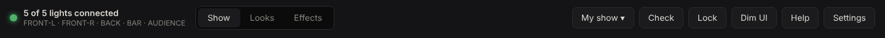
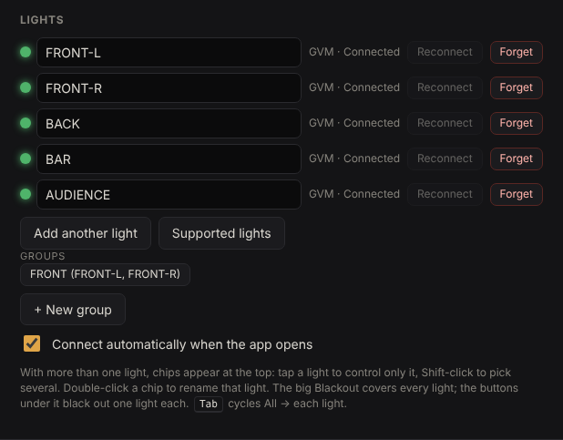
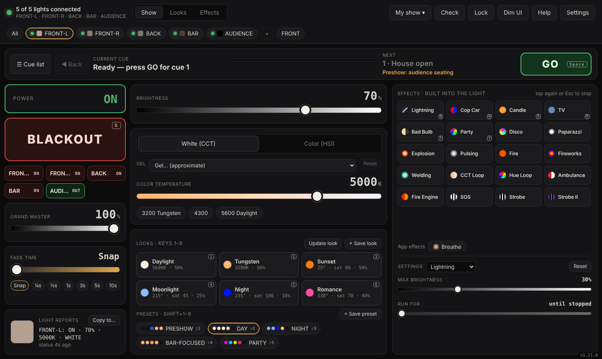
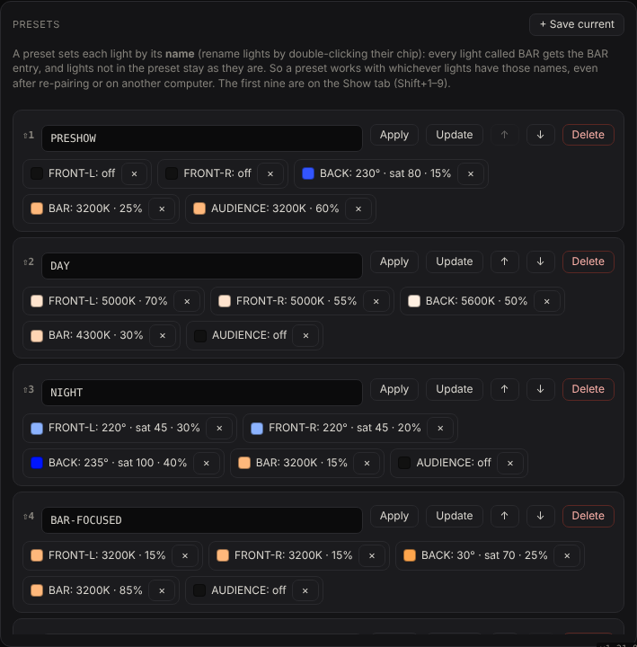
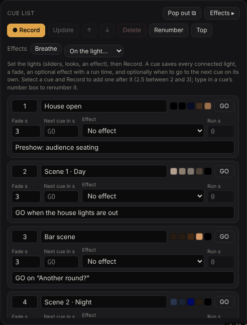
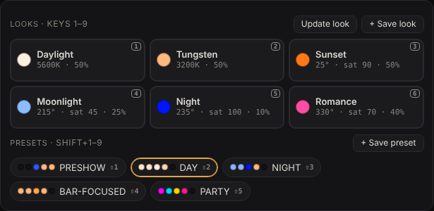

DIY theatre lighting with Bluetooth LED panels
A simple, low-cost lighting system for a small stage, community theatre, classroom or black-box space: three to six Bluetooth LED lights on stands, and a laptop running the free GVM Show Control web app with named lights, presets and a GO-button cue list. No dimmer racks, no DMX, no lighting desk.
1. What you need
- Three to six Bluetooth LED lights. Supported today: the GVM 800D-RGB (verified) and the amaran Ace 25c and amaran Halo 300x (reported working; the Halo is white only). Lights with color (RGB) give you the most looks; white-only lights work for the front. Other amaran Halo sizes, Neewer, Godox, Govee, Nanlite, Yongnuo and ELK-BLEDOM strips have untested support (β). The app's Supported lights list (Settings → Lights) shows what's tested. Shopping on a budget? See Lighting a small theatre for under $1,000 for a full list with links.
- A light stand per light, ideally 2–2.5 m (7–8 ft) tall, and a sandbag on each one.
- A laptop with Google Chrome or Microsoft Edge (Web Bluetooth). Windows, macOS, ChromeOS or Android. Not iPhone/iPad: Safari doesn't support Web Bluetooth.
- Power for each light (or charged batteries), extension cables and gaffer tape for the cables.
Keep the laptop within about 10 m (30 ft) of the lights, ideally with a clear line of sight. Most computers can hold around 7 Bluetooth connections at once; all amaran lights share one connection, so mixing brands helps.
2. Plan the rig
Give every light one job. This five-light rig covers a small stage well and is what the rest of this guide uses. The names are the ones you'll give the lights in the app: presets find lights by name.
| Name | Where | Job | Light |
|---|---|---|---|
| FRONT-L | In front of the stage, house left, about 45° off center | Faces: the main light (key) | Color or white panel |
| FRONT-R | In front of the stage, house right, about 45° off center | Faces: fills the shadows from FRONT-L | Color or white panel |
| BACK | Behind the actors, high, pointing down and forward | Separates actors from the background; sets the mood (night blue, sunset) | Color panel |
| BAR | Next to a set piece (here: a bar), low or on the floor | A "special" that pulls focus to one area | Small color light (e.g. amaran Ace 25c) |
| AUDIENCE | Over or beside the seating, aimed at the seats, not the stage | House light for preshow, intermission and bows | Warm white |
Fewer lights? Start with FRONT-L, FRONT-R and BACK. More? Add a second special, a backdrop (cyc) wash, or a second pair of front lights for a wider stage.
3. Place the lights
The classic approach (the McCandless method) lights each actor from two sides at about 45°: one light a little warmer and brighter, the other a little cooler and dimmer. Faces get shape instead of flat light, and the second light fills the shadow of the first.
Placement tips
- Height beats brightness. Too low and actors' shadows land on the back wall; too high and eyes go dark. About 45° up is the sweet spot.
- Cross the front lights. FRONT-L lights the right side of the stage best, FRONT-R the left: aim each one past center so their beams overlap where actors stand most.
- Keep the back light out of the audience's eyes: high and pointing down.
- Sandbag every stand and tape every cable along walls and edges, never across an exit path.
- Walk the stage with a helper before deciding: look for dark gaps between the front lights and fix them by re-aiming before you touch the app.
4. Pair and name the lights
- Open the app in Chrome or Edge. Turn the lights on.
- GVM: set each light to App mode (the small mode button on the light) and close the GVM phone app.
It shows up as
BT_LED. - amaran: close the amaran phone app. The light may show up without a name ("Unknown or Unsupported Device"). The first time, the app asks to set it up in its own network. For an amaran Halo, set its model in Settings → Lights.
- GVM: set each light to App mode (the small mode button on the light) and close the GVM phone app.
It shows up as
- Press Pair light for the first light, then + in the light chips at the top for each next one. Pair them in the order you'll name them, so you know which is which.
- Name each light after its job: double-click its chip at the top and type FRONT-L, FRONT-R, BACK, BAR, AUDIENCE. Not sure which is which? Click a chip and press B (blackout) to see which light goes dark.


5. Group the front lights
Settings → Lights → Groups → + New group, name it FRONT, tick FRONT-L and FRONT-R. Its chip at the top now selects both, so brightness, color temperature and looks change them together. Click a single light's chip to go back to one light. Tab steps through All → each light.
6. Looks for a single light
A look is one color and brightness you'll use often (Daylight, Tungsten, Night…). Select a light or group, press a look tile (keys 1–9), and it fades in using the Fade time. + Save look keeps the selected light's current color; Update look replaces one.

7. Presets for the whole stage
A preset sets every light at once, each to its own color and brightness, matched by the light's name. That's the "state of the stage" for a moment in the show. Build one like this:
- Set each light by hand (click its chip, then brightness, color, a look or an effect).
- Press + Save preset under the looks and give it a name, e.g. BAR-FOCUSED. The dialog lists what each light will be set to.
- Apply it any time with its chip or Shift+1–9. Lights not in the preset are left alone.
A starter set for the five-light rig:
| Preset | FRONT-L | FRONT-R | BACK | BAR | AUDIENCE |
|---|---|---|---|---|---|
| PRESHOW | off | off | blue 15% | 3200 K 25% | 3200 K 60% |
| DAY | 5000 K 70% | 5000 K 55% | 5600 K 50% | 4300 K 30% | off |
| NIGHT | pale blue 30% | pale blue 20% | deep blue 40% | 3200 K 15% | off |
| BAR-FOCUSED | 3200 K 15% | 3200 K 15% | amber 25% | 3200 K 85% | off |
| PARTY | magenta 50% | cyan 50% | yellow 60% | pink 60% | off |

8. The cue list
The cue list runs the show with one button. Open ☰ Cue list (C), then for each moment:
- Apply the preset (or set the lights by hand).
- Press ● Record. Set the Fade time (seconds), and write the GO point in the Notes line, e.g. GO on "Another round?". The note appears under Next in the cue bar during the show.
- Need a cue in between later? Select cue 2 and Record: it becomes 2.5.


During the show press GO or Space for the next cue and Shift+Space to go back. Next cue in makes a cue follow on by itself after a set time.
9. On show day
- Check (top right) confirms every light is connected and answering, one at a time.
- Lock (L) leaves only GO, Back and Blackout working, so a stray click can't change a light.
- Dim UI darkens the laptop screen for the booth.
- Grand master (under Blackout) trims every light at once if the room is brighter or darker than in rehearsal.
- Blackout (B) takes everything out; press again to restore.
- Export a backup (Settings → Backup) after the final rehearsal. The show lives in this browser only.
10. Questions
How many lights can I use?
Most computers hold around 7 Bluetooth connections at once. Each GVM light uses one; all amaran lights together use one, because they relay each other's messages over a mesh. For bigger rigs, use a second laptop for some lights.
Can I mix brands?
Yes. Looks, presets, cues, groups and the grand master work across brands. Built-in effects run on lights that have them and are simulated on lights that don't (fast ones like strobes are only offered where the light can keep up).
Does it need the internet?
Only to open the app the first time. After that it works offline (install it from the browser's address bar).
Which lights are supported?
GVM 800D-RGB (verified), amaran Ace 25c and amaran Halo 300x (work; still being verified). Other Halo sizes and several other brands have untested support (β). More are planned; see the supported lights list. Have a light that isn't listed? Send a light report.